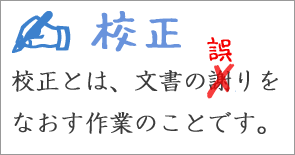
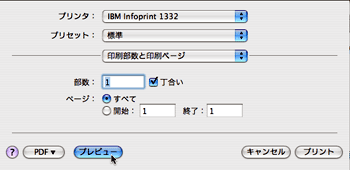
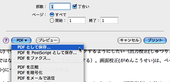
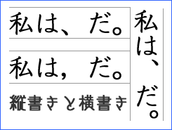
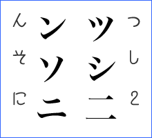
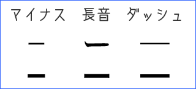

日文文書処理
日本語文書の校正について
校正とは

校正とは、誤字や脱字などがないか、表現に誤りがないかをチェックする作業をいう（このような狭い意味での校正は「文字校正」ともいわれる）。
また、広い意味では、語や文の誤りだけでなく、文書の構成（たとえば、章や節、図版の番号などがきちんと連続しているか、写真や図版の位置が正しいかなど）や体裁（たとえば、行の揃えや行間・字間の設定、カラーの場合には配色など）のチェックも含まれる。
電子文書を校正したり、校正を支援するソフトウェアもあるが、文書の量が極端に多くないかぎり、手作業の方が早く正確である（ことが多い）。
校正を行なうとき
校正が必要になるのは、たとえば、次のような場合である。
- 紙の原稿などから電子文書を作成したとき（入力のチェック）
- すでに入力されている電子文書を整形するとき
- 電子文書を印刷したり、公開したりする前（最終チェック）
また、いずれの場合も、
〈誤りの訂正〉→〈結果の再確認〉
と、最低２回のチェックをする必要がある。
校正の作業
校正では、もとになる紙の原稿がある場合と、紙の原稿がない場合とがある。たとえば、直接コンピュータで作成した電子文書には紙の原稿はないだろう。
ただ、直接コンピュータで作成した場合でも、プリントアウトしたものに加筆・修正したときには、紙の原稿があることになる。また、ファイルの受け渡しによって、データの一部が失われたり、文書の体裁が崩れてしまうこともあるので、電子文書とプリントアウトしたものの両方がある場合には、必ずプリントアウトしたものも参照する。
紙の原稿がある場合は、もとの原稿と文書とを照合しながら誤字や脱字を見つけていく。紙の原稿がない場合には、文書をよく読んで誤字や脱字を見つけていく。
もともと校正は、印刷されたものに赤で訂正を書き込んでいくこと作業である。しかし、電子文書の場合は、いちいち印刷（プリントアウト）せずに、できるだけ画面（ディスプレイ）の上でチェックするようにしたい（出力校正ではなく、画面校正にする）。画面校正は、ペーパーレス化につながる利点がある。
なお、文書の体裁も、プリントプレビュー（預覧列印）を行なう（あるいは、PDFなどに書き出す）ことで効率的にチェックできる。

↑ プリントプレビュー（MacOSX）

↑ PDFへの書き出し（MacOSX）
電子文書を画面の上で校正するときには、直接ファイルを変更することになる。そのため、校正する前に、必ずファイルのコピー（複製）をつくって、そのコピー（複製）したファイルに対して作業をする。
電子文書の校正の方法
電子文書の校正では、誤りを直接訂正する（上書きする）か、本文に訂正を挿入する。
本文に訂正を挿入する場合は、当該部分をカッコなどでくくった上で、訂正前の原文に訂正後の語句を併記する（語句は、スラッシュ『/』などで区切る）。また、本文とはテキストカラーを変える（たとえば、赤にする）。
校正前の文（原文）
国家の安全補償には、必ず財政負担が伴うものである。
校正後の文の例（直接訂正）
国家の安全保障には、必ず財政負担が伴うものである。
校正後の文の例（訂正の挿入）
国家の【安全補償／安全保障】には、必ず財政負担が伴うものである。
校正したものが原稿になる（そのまま利用する）ときには、直接訂正すればよいが、校正したものを著者などに再確認してもらうときには訂正を挿入するようにする。
- 校正したものをそのまま利用するとき → 直接訂正する
- 校正したものを他の人が確認するとき → 訂正を挿入する
誤字や脱字のチェック
校正では誤字や脱字を正しく訂正することが大切である。
誤字
誤字には、主に、入力のミス（ミスタイプ）によるもの（ミスをしたまま変換したものを含む）と、同音異義語（読みは同じだが、意味が違う語）の間違いによるもの（いわゆる「誤変換」を含む）とがある。
ミスタイプによるもの
ミスタイプによる誤字には、次のようなパターンがある。
- 変なローマ字がある
-
- 「…ということであr、」→「…ということであり、」
キー入力の不足：[Ｉ]のキーがうまくタイプできなかった
- 「その点にkなんしては、」→「その点に関しては」
入力順の間違い：［KANNSITE］を［KNANSITE］とタイプしてしまった
- 変なひらがながある（多すぎる）
-
- 「…と考えられれる。」→「…と考えられる。」
勢いでタイプした：勢いがありすぎて「れ」を２回タイプした
- 「こいういうときに大切なのは、」→「こういうときに大切なのは、」
隣のキーも押した：[Ｕ]と一緒に[Ｉ]も押してしまい［KOUIU］を［KOIUIU］とタイプした
- 「…しました。て、それから」→「…しました。それから」
文の修正のミス：「…して、それから」という文を２つの文に分けようとしたが失敗した
- 「彼女はにプレゼントした。」→「彼女にプレゼントした。」
語の修正のミス：「は」を「に」に直すつもりが「は」が残ってしまった
- ひらがなが変だ
-
- 「大きな声であいさたうしましょう。」→「大きな声であいさつしましょう。」
隣のキーと間違えた：[Ｓ]と[Ａ]を間違えて［AISATSU］を［AISATAU］とタイプした
- 「大丈夫だと思っていまず。」→「大丈夫だと思っています。」
隣のキーと間違えた：[Ｓ]と[Ｚ]を間違えて［IMASU］を［IMAZU］とタイプした
- 「問題だということうぃ理解し…」→「問題だということを理解し…」
隣のキーと間違えた：[Ｏ]と[Ｉ]を間違えて［KOTOWO］を［KOTOWI］とタイプした
- 「あなたの気持ちはわかりましが…」→「あなたの気持ちはわかりますが…」
隣のキーと間違えた：[Ｕ]と[Ｉ]を間違えて［MASU］を［MASI］とタイプした
- カタカナが変だ
-
- 「プレセント情報です。」→「プレゼント情報です。」
隣のキーと間違えた：[Ｓ]と[Ｚ]を間違えて［ZE］を［SE］とタイプした
- 文字の位置が変だ
-
- 「…彼はにできないだろう。」→「…彼にはできないだろう。」
修正のミス：「彼は」を「彼には」と修正しようとして失敗した
- 「さやわかな天気になった。」→「さわやかな天気になった。」
原因不明：何らかの事情で「わ」と「や」が逆になった
- 変な語がある
-
- 「振る打つミルク」→「フルーツミルク」
長音の間違い：長音と母音を間違え「ふるーつ」を「ふるうつ」とタイプした
- 「臨死の会議があります。」→「臨時の会議があります。」
隣のキーと間違えた：[Ｓ]と[Ｚ]を間違えて［ZI］を［SI］とタイプした
- 「道路が格子中だったので、」→「道路が工事中だったので、」
隣のキーと間違えた：[Ｓ]と[Ｚ]を間違えて［ZI］を［SI］とタイプした
- 「日本語にほにゃくしなければいけません。」→「日本語に翻訳しなければいけません。」
キー入力の不足（撥音の脱落）：[Ｎ]のキーが１回足りず［HONNYAKU］が［HONYAKU］になった
- 「たくさん買いすぎて甘てしまいました。」→「たくさん買いすぎて余ってしまいました。」
キー入力の不足（促音の脱落）：[Ｔ]のキーが１回足りず「あまって」を「あまて」とタイプした
- 変なカタカナ(カタカナ語)がある
-
- 「雪の上でコロン部と」→「雪の上で転ぶと」
隣のキーも押した：[Ｂ]と一緒に[Ｎ]も押してしまい［KOROBU］を［KORONBU］とタイプした
- 「チキンをオープンに入れた。」→「チキンをオーブンに入れた。」
うっかりミス：「オープン」と「オーブン」を混同した
- 「このプランでマインとなるのは、」→「このプランでメインとなるのは、」
英語の単語：英語の"main"をそのままタイプしてしまった
- 「チャンプ場に遊びにいきました。」→「キャンプ場に遊びにいきました。」
英語の影響：英語の"camp"の影響で［KYANNPU］を［CYANNPU］とタイプした
同音異義語によるもの
同音異義語による誤字には、次のようなパターンがある。
- 同音異義語による誤変換
-
- 「日本に留学するよい機械だ。」→「日本に留学するよい機会だ。」
- 「いま彼女は規制中です。」→「いま彼女は帰省中です。」
- 「変身いたします。」→「返信いたします。」
- 区切りの間違いによる誤変換
-
- 「道は彼はでいっぱいです。」→「道は枯葉でいっぱいです。」
［かれは］を［かれ｜は］とした
- 「北海道の開拓し」→「北海道の開拓史」
［かいたくし］を［かいたく｜し］とした
- 「言語の今日自体は、」→「言語の共時態は、」
［きょうじたい］を［きょう｜じたい］とした
※共時態：言語学の専門用語
- 「見ざる言わざる着飾る」→「見ざる言わざる聞かざる」
［きか｜ざる］を［き｜かざる］とした
※日光東照宮の三猿【→三猿の物語（日光観光協会オフィシャルサイト内へのリンク）】
間違いやすい同音異義語
| よみ | 間違いやすい漢字 | よみ | 間違いやすい漢字 |
| あう | 合う ／ 会う ／ 遭う ／ 遇う ／ 逢う | ぐんしゅう | 群衆 ／ 群集 |
| いがい | 以外に ／ 意外に | こうせい | 公正 ／ 更正 ／ 更生 |
| いたむ | 痛む ／ 傷む | じてん | 辞典 ／ 事典 ／ 字典 |
| いちじ | 一時 ／ 一次 | しょうかい | 紹介 ／ 照会 |
| いどう | 移動 ／ 異動 | すすめる | 進める ／ 薦める ／ 勧める |
| おさめる | 納める ／ 収める ／ 治める ／ 修める | せいとう | 正統 ／ 正当 |
| おす | 押す ／ 推す ／ 捺す | たいしょう | 対象 ／ 対称 ／ 対照 |
| かいてい | 改訂 ／ 改定 | たずねる | 訪ねる ／ 尋ねる |
| かいほう | 開放 ／ 解放 | つとめる | 勤める ／ 努める ／ 務める |
| かたい | 硬い ／ 固い ／ 堅い | のせる | 乗せる ／ 載せる |
| かわく | 乾く ／ 渇く | のばす | 延ばす ／ 伸ばす |
| かんさつ | 監察 ／ 観察 | のぼる | 登る ／ 上る ／ 昇る |
| かんしょう | 鑑賞 ／ 観賞 | はやい | 早い ／ 速い |
| きかい | 機会 ／ 機械／ 器械 | ほけん | 保険 ／ 保健 |
| きく | 効く ／ 利く | ほしょう | 保障 ／ 保証 ／ 補償 |
| きく | 聞く ／ 聴く | みる | 見る ／ 診る ／ 看る ／ 観る |
| きじゅん | 基準 ／ 規準 | めいじる | 命じる ／ 銘じる |
| きょうい | 驚異 ／ 脅威 | やぶれる | 破れる ／ 敗れる |
| きょうかい | 協会 ／ 教会 ／ 境界 | ようご | 擁護 ／ 養護 |
| きょうはく | 脅迫 ／ 強迫 | わかれる | 分かれる ／ 別れる |
脱字
脱字には、主に、入力のミス（ミスタイプ）によるものと、修正のミスによるものとがある。
- 入力のミスによるもの
-
- 「オリンピクで金メダルを獲得した。」→「オリンピックで金メダルを獲得した。」
促音（「っ」「ッ」）の入力をミスしてしまった
- 「歌手としてデビュすることになった。」→「歌手としてデビューすることになった。」
長音記号（「ー」）の入力をミスしてしまった
- 「日本教育学の研究をしていました。」→「日本語教育学の研究をしていました。」
入力するときに語の一部を落としてしまった
- 修正のミスによるもの
-
- 「それではダメだと思ますよ。」→「それではダメだと思いますよ。」
「思う」を「思います」に修正しようとして失敗した
- 「財法人交流協会台北事務所」→「財団法人交流協会台北事務所」
「（財）交流協会」を「財団法人交流協会」に修正しようとして失敗した
誤字や脱字のチェックで注意する点
固有名詞（人の名前や会社の名前、地名など）は間違いが起きやすいので、固有名詞の場合は、正しい文字をきちんと確認するようにする。
専門用語の場合にも誤変換（変換ミス）が起きやすいので注意する。そのため、専門用語の多い文書の校正には、専門的な知識が必要にされることがある。
また、本文の誤りには気づいても、見出しなどの大きな文字の誤りには気づきにくいことがあるので注意が必要である。
不適切な記号や文字のチェック

句点に「。」（マル）と「．」（ピリオド）が混ざっていたら、どちらかに統一する。日本語の文章では、「。」（マル）を使うのがふつうである。
同じく、読点に「、」（テン）と「，」（カンマ）が混ざっていたら、どちらかに統一する。日本語の文章の場合、縦書きでは「、」（テン）を使うのがふつうだが、横書きでは「、」（テン）と「，」（カンマ）のどちらを使ってもよい。

また、「−」（マイナス）と「ー」（長音）と「—」（全角ダッシュ）の混同に注意する。外国人が書いたものでは、カタカナの「ニ」と漢字の「二」の混同、カタカナの「ン」（ん）と「ソ」（そ）、「ツ」（つ）と「シ」（し）の混同にも気をつける。
フォントがゴシック体のときには、文字の見分けがつきにくいので十分に注意する。

なお、２桁以上の算用数字には、１バイト文字（半角文字）を用いるのが普通なので、２バイト文字になっているときには、１バイト文字にする。
不適切な表現の訂正
表記の統一
「ディレクトリ」と「ディレクトリー」や、「例えば」と「たとえば」など語の表記が不統一ならばどちらかに統一した方がよい。
表記の統一では、エディタやワープロの『検索・置換』の機能を使うと便利なことがある。ただ、置換する必要のない語まで置換されることがあるので気をつけなければならない。
また、カタカナの固有名詞の場合は、実際の発音と異なる表記が標準になっているものもあるので、標準的な表記をきちんと調べる必要があるだろう。
参考：世界の首都
モスクワ（Moskva/ロシア Russia）、ワシントンDC（Washington, D.C./アメリカ America）、キャンベラ（Canberra/オーストラリア Australia）、ローマ（Rome/イタリア Italia）、アムステルダム（Amsterdam/オランダ Holland）、ブラジリア（Brasília/ブラジル Brasil）、パリ（Paris/フランス France）、ワルシャワ（Warszawa/ポーランド Poland）、ソウル（Seoul/韓国）
また、複数の表記が通用しているものもある。
- Los Angeles：ロサンゼルス／ロスアンジェルス／ロスアンゼルス
- Strait of Dover：ドーバー海峡／ドーヴァー海峡
- Vladivostok(Владивосток)：ウラジオストク／ウラジオストック／ウラジヴォストク
不適切な表現
慣用句やことわざの誤りがあれば、訂正する。
間違いやすい慣用表現
| ×間違った表現 | ○正しい表現 |
| 表現 | よみ | 意味 |
| ×いやが応にも | ○いやが応でも | いやがおうでも | 何と言おうと（構わずに） |
| ○いやが上にも | いやがうえにも | ますます・さらに |
| ×知ってか知らずか | ○知ってか知らでか | しってかしらでか | 知っているのか知らないのか |
| ×微に入り細にわたり | ○微に入り細を穿つ | びにいりさいをうがつ | 細かいところまで(配慮する) |
| ○微に入り細に入り | びにいりさいにいり | 細かいところまで(入り込む) |
| ×袖に振る | ○袖にする | そでにする | 冷淡な態度をとる |
| ○袖になす | そでになす |
| ×あろうことなら | ○成ろうことなら | なろうことなら | できることなら |
| ×怒り心頭に達する | ○怒り心頭に発する | いかりしんとうにはっする | 激しい怒りを抑えられなくなる |
| ×愛想を振りまく | ○愛嬌を振りまく | あいきょうをふりまく | 好感を持たれるような態度をとる |
| ×二の轍を踏む | ○二の足を踏む | にのあしをふむ | 決断できずに躊躇(ちゅうちょ)する |
| ○前轍を踏む | ぜんてつをふむ | 前と同じ失敗をする |
| ×二の舞を繰り返す | ○二の舞を演じる | にのまいをえんじる | 前(の人)と同じ失敗をする |
| ×二の舞を踏む |
| ×二の舞を舞う |